Overview
Inside the Material Editor you can browse, create, edit and assign materials to objects, terrain, etc.
It also allows you to copy existing materials and use them as a starting point for your specific material needs. Materials files (.mtl) are ideally located in the same folder as the object they were created for. However, as they can be freely assigned to any objects inside your game project, the only restriction is to place them inside the game project folder structure.
Editing materials not only allows you to choose textures and shaders, but also fine-tune placement, animation of textures and tweaking parameters relevant for a chosen shader type.
To open the legacy Material Editor, go to Tools → Material Editor Legacy.
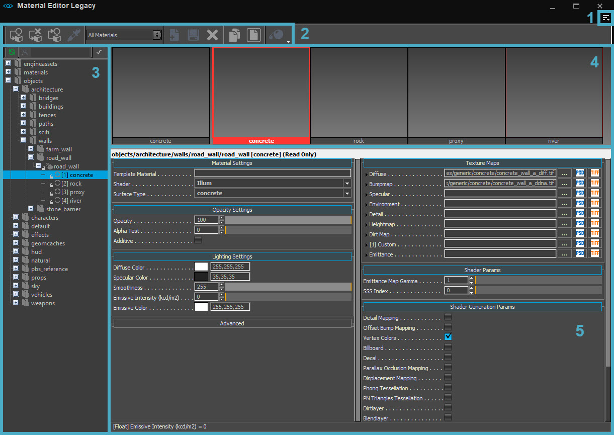
1. Menu
The Menu can be accessed via the 
2. Toolbar
The toolbar at the top of the Material Editor window has shortcut buttons for frequently used actions.
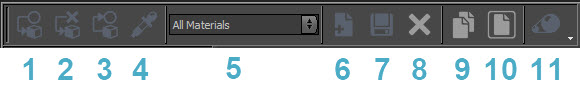
| # | Button | Description |
|---|---|---|
| 1 | Assign Item to Selected Objects | Assigns a material to the object that is selected in the main Viewport; overwrites the original material (i.e. for a CGF) for this copy of the object in the editor. |
| 2 | Reset Material on Selection to Default | Resets the selected object's material to default (or the material stored in the *.cgf file). |
| 3 | Get Properties from Selection | Selects the material which is assigned to the selected object. |
| 4 | Pick Material from Object | Interactively select a single Material or a sub-material of an object in the scene by using an eyedropper tool. |
| 5 | Materials Library Browser | Select a filter to display materials in the library.
|
| 6 | Add New Item | Adds a new material to the library |
| 7 | Save Item | Saves the selected material (only works for materials outside of *.pak files) |
| 8 | Remove Item | Deletes the material. CAUTION: also deletes the *.mtl file. No Undo possible. |
| 9 | Copy Material | Copies the selected material. |
| 10 | Paste Material | Pastes the selected material. |
| 11 | Open large material preview | Opens a separate window which enables you to preview the material in more detail and from different angles. |
3. Browser
The Material Browser lets you browse the library for materials, similar to Windows Explorer.
At the top of the folder structure you can find a quick search, which filters the materials in your library. You can use it to quickly locate a material you know the name of.
Context Menu
When right-clicking on items in the Material Browser, a context menu will be displayed. Which options are displayed depends on the kind of item you have clicked on:
| Option | Description |
|---|---|
| Cut | Cuts the selected material and moves it to the clipboard. |
| Copy | Copies the selected material onto the clipboard. |
| Paste | Opens File dialog and allows paste copied earlier material to specified folder. |
| Copy Name to Clipboard | Copies the name and the path of the material onto the clipboard. |
| Extract | Extracts the selected material from the *.pak file into a folder with the same path as in *.pak file. |
| Duplicate | Duplicates the selected material and puts the duplicate into the same folder. |
| Rename | Lets you rename the selected material. |
| Delete | Deletes the selected material. When deleting the material this way, it will be deleted from your hard-drive. |
| Reset | Resets the selected material to its default settings. |
| Assign to Selected Objects | Assigns the material to the object you have selected in the Viewport. |
| Select Assigned Objects | Selects all objects the selected material has been assigned to. |
| Convert To Multi Material | Converts the selected material to a Multi Material. |
| Add New Material | Adds a new material in the active folder. |
| Add New Multi Material | Adds a new Multi Material in the active folder. |
The padlock icon next to a material indicates that it is read-only. Any changes you make to a locked material will be lost, even if you save the level.
If you wish to edit an existing material, extract it from the *.pak file it's located in and ensure that read-only is not checked on the file properties.
4. Preview
In the Material Preview, you can see what the material you have selected looks like. You can also see the material on several predefined objects to get a better idea of what it would look like in-game.
When right-clicking on a preview, a context menu appears:
| Option | Description |
|---|---|
| Use Default Object | Uses a default object for a preview of the selected material. |
| Use Plane | Uses a plane for a preview of the selected material. |
| Use Box | Uses a box for a preview of the selected material. |
| Use Sphere | Uses a sphere for a preview of the selected material. |
| Use Teapot | Uses a teapot for a preview of the selected material. |
| Black Background | Changes the background of the preview to black. |
| Gray Background | Changes the background of the preview to gray. |
| White Background | Changes the background of the preview to white. |
| Texture Background | Changes the background of the preview to textured. |
| Use Back Light | Enables back light for preview. |
5. Parameters
Please see Tutorial - Getting Started with the Material Editor to learn more about the basic of the Material Editor.
Material Settings
| Setting | Description | ||||||
|---|---|---|---|---|---|---|---|
| Template Material | This function is deprecated and may not work as expected. | ||||||
| Shader | Here you can select the shader you want to use. Generally you use illum/vegetation/glass shader. For more information on shaders, see Shader Reference. | ||||||
| Surface Type | You can select a surface type for your material here. The surface type sets up what kind of sound will be played or what kind of particle effects will be spawned when you shoot the object.
|
Opacity Settings
These settings are important if using alpha channels for transparency, for example when creating leaves and wire fences.
| Setting | Description | ||||||
|---|---|---|---|---|---|---|---|
| Opacity | With the opacity value you can switch between Alpha Blend and Alpha Test. 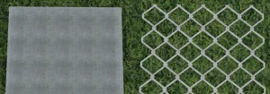 Opacity value: 0-99 -> alpha blend. Opacity value: 100 -> alpha test. With alpha blend you can get very soft and semi transparent results, but it is more expensive than alpha test. | ||||||
| Alpha Test | If you want to use alpha test, which is less expensive, set the opacity value to 100 and the AlphaTest value to 50. 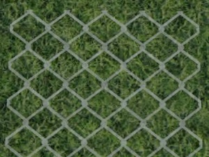 50 is the default value. A value below 50 tends more to the white color of the alpha map. A value above 50 tends more to the black color of the alpha map.
| ||||||
| Additive | When using a semi-transparent material like glass, use the additive function. The material color will be added to the background color. The resulting color will the be brighter. 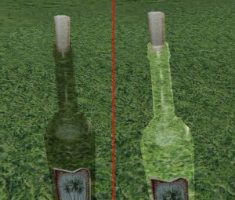 |

Lighting Settings
This section controls the material color and specular settings.
| Setting | Description |
|---|---|
| Diffuse Color | Controls the material diffuse color by double clicking the color square. The default RGB value is 255,255,255 and should usually be left at 255,255,255 for Physically Based Shading (PBS). To get the best quality rendering, it is recommended to always use 255,255,255 diffuse with no color input and adjust the diffuse texture accordingly. Using the slider next to the color you can control the brightness. You can also type in the RGB code in the fields underneath the color spectrum. There is also a color swatch available in the Standard tab. 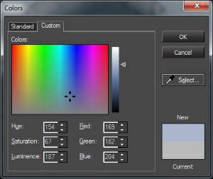 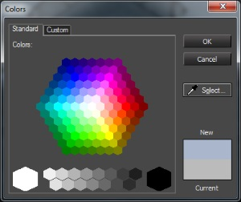 |
| Specular Color | The specular color is the reflective or shiny component of a material when light shines onto the object. To correctly set up PBS materials please see the documentation for Physically Based Shading (PBS). From left to right and top to bottom: midday, evening, night, neutral 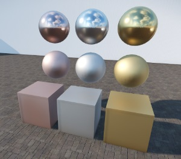 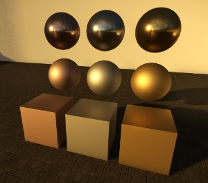 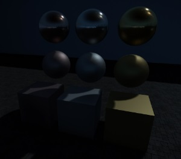 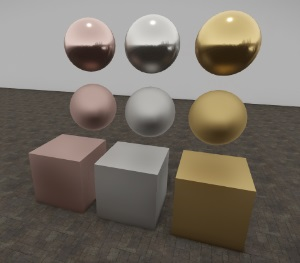 |
| Smoothness | The smoothness defines how rough or glossy a surface is. To correctly set up PBS materials please see the documentation for Physically Based Shading (PBS). Think of it as defining the micro details on a surface, where the normal map defines the macro details. The smoothness map is stored inside the Alpha channel of the normal map (saved with the postfix _ddna). The higher the value you enter for the Smoothness, the tighter the specular highlight will be. In the following picture, from Left to right, we are decreasing the Smoothness value.
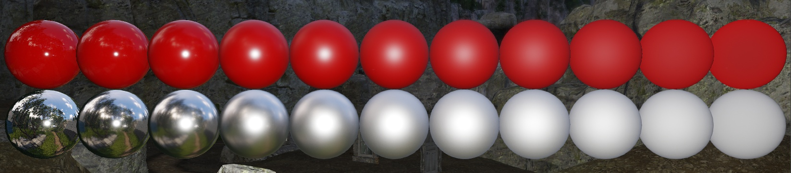 |
| Emissive Intensity (kcd/m2) | The Emissive Intensity defines how much light gets emitted from the surface (previously known as 'glow'). The intensity is specified in kilonits (same as kcd/m2) which is the physical unit for Luminance. A candle flame has a typical Emissive Intensity of 10 kcd/m2. Please note that for surfaces, emittance is only supported by the Illum shader and is ignored by the Vegetation and HumanSkin shaders. |
| Emissive Color | The Emissive Color defines the color of the emitted light ("glow") when the Emissive Intensity is not zero. In case an emittance map is used, the emissive color gets multiplied with the emittance map color. |
Advanced Settings
Setting | Description |
|---|---|
| Allow layer activation | Enabling this feature will load the material while the layer is loaded. When the layer is not loaded, the material will not be loaded either. For performance reasons, it is recommended to turn this on at all times. |
| 2 sided | Both sides of the face the material is assigned to will be rendered by the engine. You normally use this for objects with alpha channels like leaves which have no thickness. |
| No shadow | Faces the material is assigned to will not cast a shadow. |
| Use Scattering | Deprecated |
| Hide After Breaking | This will make a subset disappear when the object it's attached to breaks procedurally. An example is a liana that disappears when the palm tree it hangs from breaks. |
| Blend Terrain Color | Color information is tinted based on the terrain color. For example, Grass inherits terrain albedo in a use case. |
| Traceable Texture | Material will be applied to Ray Traceable decals and will use an alpha map to verify the texture. |
| Fur Amount | Deprecated |
| Voxel Coverage | Allows you to control voxel opacity for SVOTI integration. |
| Heat Amount | Applies heat to the object to be used in conjunction with the thermal vision effect (r_NightVision=3). |
| Cloak Amount | Deprecated |
| Link to Material | Deprecated |
| Propagate Options | Deprecated |
Texture Maps
In the material editor are different slots for texture maps. With texture maps, users can control different shader effects.
To add a texture to the material slot, click the "..." button on the right side or copy and paste the texture path into an empty slot.
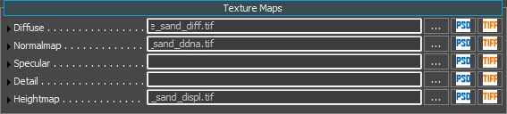
The Texture Map slot layout is fairly straightforward: the left column displays which type of texture map the slot is associated with, the middle column is where the texture map file is place and on the right there are three buttons:
Button | Description |
|---|---|
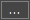 | Opens the file browser dialog to select a texture. |
Opens the current texture's associated *.psd file in Photoshop (requires defining Texture Editor in Preferences). | |
Opens the current texture's *.tif file (if available) in Photoshop (requires defining Texture Editor in Preferences). |
Hovering over the name of the Diffuse texture gives you a preview of that texture.
The table below shows the textures available for the Illum shader. Some texture maps will only be available when certain materials or textures are selected, or upon activation of Shader Generation Parameters.
Texture Map | Filename Suffix | Channels | Description |
|---|---|---|---|
| Diffuse Map | _diff | RGBA | Defines the albedo color of the surface. Can also contain monochrome Alpha channel to describe alpha transparency. |
| Bumpmap | _ddna | RGBA | Special version of Normal maps. Additionally uses monochrome Alpha Channel (aka Gloss Map) to describe the Surface's Smoothness inside the Physical Based Rendering System. |
| Specular (Reflectance map) | _spec | The texture representing the specular intensity and color of material highlights defined as the "shininess" and color of specular reflections. | |
| Environment Map | _cm | RGBA | Can be defined custom through slot input or can inherited from the "nearest cubemap." |
| Detail Map | _detail | The texture allowing you to add more details to surfaces. It works like the second material layer and it is not affected by the mapping of the model it is used for. | |
| Heightmap | _displ | The texture which is utilized by POM/OBM/Tessellation to give more depth and definition to an object. | |
| Dirt Map | _diff | RGBA | A decal that houses an alpha for laying over grime or moss on objects. |
| Custom | _sss | RGBA | The custom slot is generally used to expose common parameters such as SSS or opacity for opaque materials. |
| Emittance Map | _em | The Emittance map is used to control what portion of the texture will be set to glow or emit. |
All of these Texture Maps have the following options when they're expanded:
| Option | Description | ||||||
|---|---|---|---|---|---|---|---|
| Tex Type | Lets you select the following texture types:
| ||||||
| Filter | These options are deprecated. | ||||||
| Is Projected Tex Gen | |||||||
| Tex Gen Type | Lets you select the following options:
| ||||||
| Tiling | Lets you select the following options:
Note that you currently cannot tile normal or specular maps independently of the diffuse map. This is because of material instancing which saves many draw calls.
| ||||||
| Rotator | With the rotator you are able to create a rotating/shifting texture animation. Choose between three different types of rotation by clicking the option box.
| ||||||
| Oscillator | Like the rotator, the oscillator animates a texture.
|


The rotator and oscillator functions are only available for diffuse and decal textures because of technical limitations.
You can create many interesting effects like animated glow by using the decal slot:
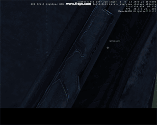
Shader Params
A complete list of shader params will be added to the documentation soon.
Shader Generation Params
See this page (and subpages).
Vertex Deformation
The Vertex Deformation function offers the opportunity to influence geometry.
A complete list of the Vertex Deformation params will be added to the documentation soon.
Layer Presets
Usage
Below you will find some basic instructions on how to use the Material Editor Legacy.
Creating New Materials
New materials can be created in two ways:
- Pressing the Add New Item button on the toolbar while selecting the desired folder in the Browser;
Right clicking on the desired folder and choosing Add New Material.
Adding a multi-material can only be done by using the second method.
Copying Material Parameters
Apart from copying an entire material, it is also possible to copy all parameters from a material and paste it into another material, essentially copying the material itself. This is especially useful when the second material has already been assigned to several objects and you want to change the material for all of those objects at the same time.
This also essentially creates two instances of the material that you can tweak separately.
To achieve this:
Select the material you want to copy;
If you don't know the name of the material but do know an object that the material is assigned to, select the object, go to the Material Editor and click the Get Properties from Selection button.
Alternatively, you can start in the Material Editor by clicking the Pick Material from Object button and then clicking on the object in the viewport.
- Right click anywhere in the Parameters panel;
- Select Copy All;
- Select the material you want to paste the parameters into;
- Again, right click in the Parameters panel,
- Select Paste.